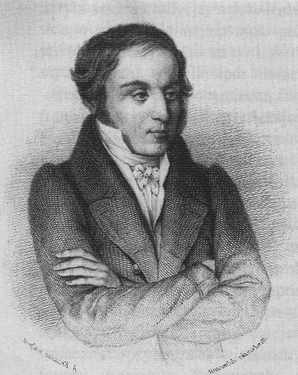

Swoistą interpretację idei „stanu naturalnego”
przyniosły pisma estetyczno-literackie K. Brodzińskiego,
który powiązywał tę ideę z problematyką
ducha narodowego i narodowej poezji,
która powinna wrócić do nieskażonych pierwotnych
źródeł twórczości (tzn. do „pierwszych
mistrzów” i ich oryginalności).

przyniosły pisma estetyczno-literackie K. Brodzińskiego,
który powiązywał tę ideę z problematyką
ducha narodowego i narodowej poezji,
która powinna wrócić do nieskażonych pierwotnych
źródeł twórczości (tzn. do „pierwszych
mistrzów” i ich oryginalności).
Kazimierz Brodziński
